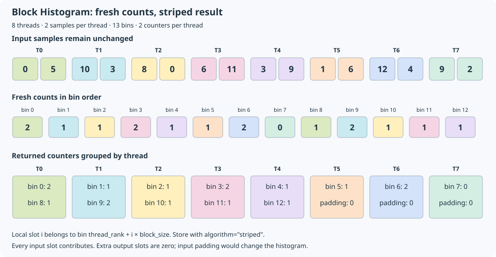

Histogram#
cuda.coop.cutlass.histogram() counts how many samples fall in each bin. Each
sample is already an integer bin index; the operation does not divide a
numeric range into intervals. It returns fresh counter payloads and
preserves the input samples for both the atomic and sort algorithms.
The explorer uses eight teaching threads in one complete one-dimensional block. Change the sample distribution to see contention on a single bin, or change the bin count to see counters distributed across thread-local output slots. All input samples are valid bin indices.


Thirteen bins, two samples and two counters per thread.#
Input samples stay unchanged. The sum of all thirteen bin counts is
sixteen, the number of input samples. Each thread receives counters
for bins thread_rank and thread_rank + 8. A dash below means
the projected bin is outside the requested range; its count is zero.
Thread T0 T1 T2 T3 T4 T5 T6 T7
Input samples 0,5 10,3 8,0 6,11 3,9 1,6 12,4 9,2
Returned bins 0,8 1,9 2,10 3,11 4,12 5,- 6,- 7,-
Returned counts 2,1 1,2 1,1 2,1 1,1 1,0 2,0 0,0
Counts in bin order: 2 1 1 2 1 1 2 0 1 2 1 1 1
Reading the stages#
Each call first initializes its intermediate counters to zero. The atomic algorithm increments the counter indexed by each sample. If several threads target the same bin, atomic updates preserve all contributions. The explorer groups updates into rounds of one local slot per thread; actual GPU scheduling need not follow that order.
The sort algorithm groups equal sample indices, then computes bin counts from the lengths of their consecutive runs. The input-preserving wrapper makes a private copy before calling CUB because CUB’s sort path changes its working samples. The original input row remains visible and unchanged. The illustration shows the sort-and-run-count idea, not the exact CUB instruction sequence or a performance comparison with atomics.
The result uses striped bin ownership: thread t receives bin
t + i * block_size in local slot i. The output is displayed grouped
by thread, so adjacent displayed counts need not refer to adjacent bins.
Use coop.store(..., algorithm="striped") to write counters in bin order.
The compile-time product block_size * bins_per_thread must cover all
bins; slots projecting beyond bins contain defined zeros.
These extra output slots differ from input padding. Every input slot
contributes a sample, so padding an incomplete input tile with zero would
add unwanted counts to bin zero. Histogram has no valid_items argument.
The examples and explorer use complete input tiles.
Accumulating several tiles#
The operation returns a fresh histogram on every call. To accumulate tiles, add corresponding returned counters in each thread. No parent object is needed: the accumulated state is the counter payload that the kernel owns. Choose a counter dtype wide enough for the total across all tiles.
This example launches 64 threads with two striped counters per thread for 65 bins. The first 65 output positions contain counts and the remaining counter slots are zero.
@cute.kernel
def count_samples(
source: cute.Pointer,
destination: cute.Pointer,
items_per_thread: cutlass.Constexpr,
):
block = coop.this_block()
samples = coop.load(block, source, items_per_thread=items_per_thread)
counts = coop.histogram(
block, samples, bins=65, bins_per_thread=2, counter_dtype=np.int64
)
coop.store(block, destination, counts, algorithm="striped")
@cute.jit
def launch(
source: cute.Pointer,
destination: cute.Pointer,
items_per_thread: cutlass.Constexpr,
):
count_samples(source, destination, items_per_thread).launch(
grid=1, block=64
)
Each call returns fresh counters and preserves its samples. For repeated tiles, accumulate returned counters into a separate payload using the same striped ownership. Choose a counter width that can represent the accumulated count. Padding samples contribute to bins, so a zero-padded input is not an ignored tail. See the Programming Guide.